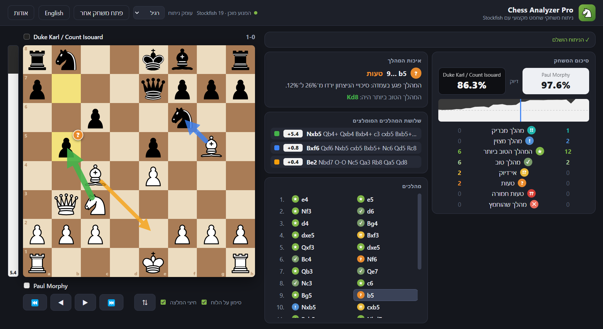

ניתוח משחקי שחמט מקצועי, בחינם, על המחשב שלכם
Chess Analyzer Pro היא תוכנת שחמט חינמית ל־Windows שמנתחת את המשחקים שלכם מ־Chess.com בעזרת מנוע השחמט Stockfish – מובנה בתוכנה, בלי התקנות נוספות ובלי אינטרנט.

איך זה עובד?
המערכת בנויה משני חלקים שעובדים יחד: תוסף קטן לדפדפן ותוכנת ניתוח למחשב.
מורידים את המשחק
תוסף ה־Chrome מוסיף כפתור לעמוד המשחק ב־Chess.com ושומר כל משחק שהסתיים כקובץ PGN.
פותחים בתוכנה
לוחצים על "בחר משחק מהמחשב", בוחרים את קובץ ה־PGN – והמשחק מוצג על לוח אינטראקטיבי.
מקבלים ניתוח מלא
מנוע השחמט בודק כל מהלך, מסמן טעויות והזדמנויות ומראה מה היה עדיף לשחק.
היכולות המרכזיות
כל מה שצריך כדי להבין איפה שיחקתם טוב, איפה טעיתם ואיך להשתפר – בתוכנה לניתוח שחמט בחינם.
סיווג איכות לכל מהלך
מבריק, מצוין, הטוב ביותר, טוב, אי־דיוק, טעות, טעות חמורה והחמצה – עם סמל וצבע, ליד המהלך וגם על הלוח.
שלושת המהלכים המומלצים
בכל עמדה מוצגים שלושה חיצים על הלוח: ירוק למהלך הטוב ביותר, כחול לשני וכתום לשלישי.
מד יתרון
מד אנכי לצד הלוח מראה מי מוביל, עם הערכה מספרית של המנוע שמתעדכנת בכל מהלך.
אחוזי דיוק וסיכום משחק
דיוק (Accuracy) לכל שחקן וספירה של המהלכים המבריקים, המצוינים, הטעויות והטעויות החמורות.
הסבר ומהלך עדיף
לכל מהלך מוצג הסבר קצר מדוע קיבל את הסיווג, ובמקרה של טעות – המהלך שהיה טוב יותר.
Stockfish מובנה, בלי אינטרנט
מנוע שחמט חינמי למחשב שמותקן יחד עם התוכנה ופועל אוטומטית ברקע. כל הניתוח נעשה אצלכם במחשב.
מה אומר כל סימון?
התוכנה מסווגת כל מהלך לפי השינוי בסיכויי הניצחון שמחשב המנוע.
- מהלך מבריקמהלך יוצא דופן, לרוב הקרבת כלי שהמנוע מאשר.
- מהלך מצויןהמהלך היחיד ששומר על העמדה או על היתרון.
- המהלך הטוב ביותרבדיוק מה שהמנוע ממליץ.
- מהלך טובמהלך נכון, גם אם לא המדויק ביותר.
- אי־דיוקמהלך מעט פחות מוצלח.
- טעותמהלך שפוגע במצב השחקן.
- טעות חמורהמהלך שפוגע בעמדה בצורה משמעותית.
- מהלך שהוחמץהחמצת הזדמנות אחרי טעות של היריב.
- המהלך הטוב ביותר
- המהלך השני בטיבו
- המהלך השלישי בטיבו
סרטון הדרכה
סרטון קצר שמראה את כל התהליך: התקנה, הורדת משחק מ־Chess.com וניתוח שלו.
תוכנת שחמט עם Stockfish – ולא האתר הרשמי של Stockfish
מחפשים מנוע שחמט להורדה בחינם? Chess Analyzer Pro היא תוכנה לניתוח משחקי שחמט שכוללת בתוכה את Stockfish, אחד ממנועי השחמט החזקים בעולם. ההתקנה מוסיפה למחשב גם את התוכנה וגם את המנוע, כך שאין צורך בהורדת מנוע שחמט למחשב בנפרד או בהגדרות ידניות.
חשוב להבהיר: זהו אינו האתר הרשמי של Stockfish, והפרויקט אינו קשור למפתחי Stockfish או ל־Chess.com. Stockfish מפותח על ידי קהילת Stockfish ומופץ ברישיון GPLv3; האתר הרשמי שלו הוא stockfishchess.org.
Chess Analyzer Pro עצמה היא תוכנה חופשית בקוד פתוח תחת רישיון GNU GPL גרסה 3.
משחק הוגן: הניתוח מיועד למשחקים שהסתיימו בלבד. התוסף אינו מוריד משחק שעדיין מתנהל, והתוכנה אינה מנתחת משחק לא גמור.
שאלות נפוצות
האם Chess Analyzer Pro באמת בחינם?
כן. התוכנה והתוסף חינמיים לגמרי, ללא מנוי וללא הגבלה על מספר המשחקים. זו תוכנה בקוד פתוח תחת רישיון GPLv3.
האם צריך להוריד את Stockfish בנפרד?
לא. מנוע השחמט Stockfish כלול בקובץ ההתקנה ומופעל אוטומטית ברקע כשבוחרים משחק לניתוח.
האם צריך חיבור לאינטרנט כדי לנתח?
לא. כל הניתוח מתבצע במחשב שלכם. אינטרנט נדרש רק כדי להוריד את המשחק מ־Chess.com.
אילו קבצים התוכנה פותחת?
קובצי PGN – הפורמט המקובל לשמירת משחקי שחמט. אפשר לפתוח גם קובצי PGN ממקורות אחרים, לא רק מ־Chess.com.
אפשר להשתמש בתוכנה בזמן משחק?
לא. התוכנה מיועדת ללמידה ממשחקים שהסתיימו. שימוש במנוע בזמן משחק פעיל הוא רמאות ואסור לפי כללי Chess.com.
באילו מערכות הפעלה התוכנה עובדת?
Windows 10 ו־Windows 11 בגרסת 64 ביט. התוסף פועל בדפדפן Chrome ובדפדפנים מבוססי Chromium.